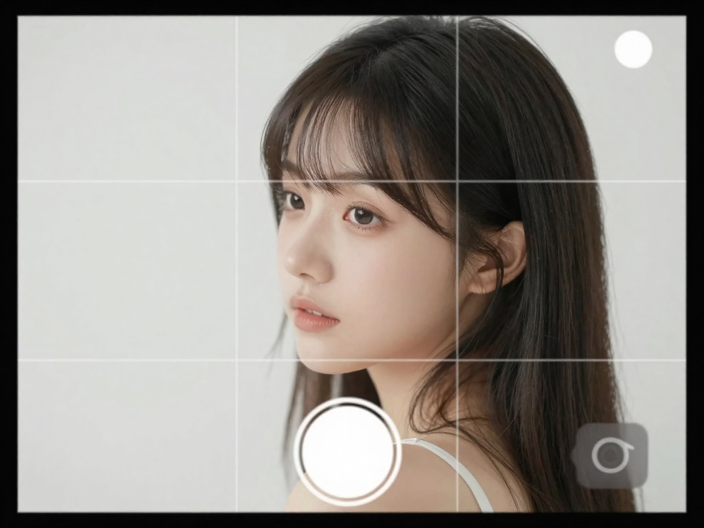

Mobil Fotoğrafçılıkta Izgara Kullanımı: Kadrajınızı Profesyonel Seviyeye Taşıyın

Mobil fotoğrafçılıkta küçük dokunuşlar büyük fark yaratır. Bu dokunuşların başında ise kamera uygulamasındaki ızgara (grid) özelliği gelir. Pek çok kişi bu çizgileri görüp kapatır, oysa doğru kullanıldığında ızgara; kompozisyonu güçlendiren, fotoğrafı dengeli hale getiren ve profesyonel bir görünüm kazandıran en basit araçlardan biridir.
Bu yazıda mobil fotoğrafçılıkta ızgara kullanımını tüm yönleriyle öğreneceksiniz.
Izgara (Grid) Nedir?
Izgara, kamera ekranını yatay ve dikey çizgilerle bölerek kadrajı parçalara ayıran bir kompozisyon rehberidir. Genellikle ekranı 3x3 (dokuz eşit parça) şeklinde böler.
Bu çizgiler fotoğrafa denge, hizalama ve odak noktası kazandırmanıza yardımcı olur.
Izgara Neden Kullanılmalı?
Izgara kullanımı, özellikle telefonla fotoğraf çekenler için şu avantajları sağlar:
- Kadraj hatalarını azaltır
- Ufuk çizgisini düz tutmanıza yardım eder
- Konuyu doğru noktaya yerleştirmenizi sağlar
- Daha estetik ve profesyonel görüntü üretir
- Kompozisyon kurmayı kolaylaştırır
Kısacası, göz kararı yerine bilinçli kadraj oluşturmanızı sağlar.
Üçler Kuralı (Rule of Thirds) ve Izgara
Izgaranın en önemli kullanım amacı üçler kuralını uygulamaktır.
Üçler Kuralı Nedir?
Kadrajı hem yatay hem dikey olarak üçe böldüğünüzde oluşan dört kesişim noktası vardır. İnsan gözü doğal olarak bu noktalara yönelir.
Altın kural: Ana konuyu tam ortaya değil, kesişim noktalarından birine yerleştirin.
Ne Zaman Kullanılır?
- Portre çekimlerinde
- Manzara fotoğraflarında
- Ürün çekimlerinde
- Sokak fotoğrafçılığında
Bu yöntem fotoğrafa derinlik ve hikâye katar.
Mobilde Izgara Nasıl Açılır?
Çoğu telefonda bu özellik varsayılan olarak kapalıdır. Açmanız gerekir.
iPhone’da
- Ayarlar’a girin
- Kamera bölümünü açın
- “Izgara” seçeneğini aktif edin
Android’de
- Kamera uygulamasını açın
- Ayarlar (dişli simgesi)
- “Grid” veya “Izgara çizgileri”ni aktif edin
Not: Marka ve modele göre isim değişebilir.
Izgara Kullanarak Daha İyi Kadraj Kurma Teknikleri
1. Ufuk Çizgisini Düz Tutun
Manzara çekimlerinde en sık yapılan hata eğik ufuktur. Izgara sayesinde:
- Ufku yatay çizgiye oturtabilirsiniz
- Deniz ve gökyüzü ayrımını netleştirirsiniz
- Fotoğraf daha profesyonel görünür
İpucu: Ufku tam ortaya koymak yerine üst veya alt üçte bire yerleştirmek daha etkileyicidir.
2. Konuyu Kesişim Noktasına Yerleştirin
Örneğin:
- Portrede gözleri üst kesişim çizgisine
- Ürün çekiminde objeyi sağ veya sol kesişime
- Sokak fotoğrafında ana unsuru kenara
Bu teknik fotoğrafa nefes alanı kazandırır.
3. Simetriyi Bilinçli Kullanın
Her zaman üçler kuralı uygulanmaz. Bazen simetri daha güçlüdür.
Izgara ile:
- Ortadan ikiye bölünmüş yansımalar
- Mimari çekimler
- Yol ve koridor fotoğrafları
mükemmel hizalanabilir.
Profesyonel ipucu: Simetri kullanacaksanız ortalamayı bilinçli yapın; rastgele değil.
4. Boşluk (Negative Space) Oluşturun
Izgara, kadrajda bilinçli boşluk bırakmayı kolaylaştırır.
Örnekler:
- Gökyüzünde küçük bir kuş
- Duvarda tek bir obje
- Minimal ürün çekimi
Bu teknik özellikle sosyal medyada çok dikkat çeker.
5. Dikey Çizgilerle Perspektif Kontrolü
Binalar ve mimari çekimlerde:
- Dikey çizgileri ızgaraya paralel tutun
- Eğilmeyi azaltın
- Daha temiz bir görünüm elde edin
Bu, amatör ile profesyonel görüntü arasındaki farkı belirgin şekilde ortaya koyar.
Izgara Kullanırken Yapılan Yaygın Hatalar
Mobil fotoğrafçılıkta sık görülen yanlışlar şunlardır:
- Her fotoğrafta ortalama yapmak: Her sahne simetrik olmak zorunda değildir.
- Konuyu çizginin üzerine koymak: En etkili yer genellikle kesişim noktasıdır.
- Ufku ortadan bölmek: Bu, fotoğrafı çoğu zaman sıradanlaştırır.
- Izgaraya bakıp anı kaçırmak: Kompozisyon önemli ama zamanlama daha önemlidir.
Hangi Çekim Türlerinde Izgara Özellikle İşe Yarar?
Izgara kullanımının en çok fark yarattığı alanlar:
- Manzara fotoğrafçılığı
- Portre çekimleri
- Mimari çekimler
- Yemek fotoğrafçılığı
- Ürün fotoğrafçılığı
- Sokak fotoğrafçılığı
Özellikle Instagram odaklı içerik üretenler için vazgeçilmezdir.
Profesyonellerden Altın Tavsiyeler
- Izgarayı sürekli açık tutun
- Önce kadrajı kurun, sonra deklanşöre basın
- Üçler kuralını öğrenin ama gerektiğinde bozun
- Ufuk çizgisine her zaman dikkat edin
- Çekimden önce 1 saniye durup kadrajı kontrol edin
Sonuç
Mobil fotoğrafçılıkta ızgara kullanımı, hiçbir ekipman maliyeti olmadan fotoğraflarınızı bir üst seviyeye taşıyan güçlü bir araçtır. Doğru kullanıldığında:
- Kadrajınız dengelenir
- Fotoğraflarınız daha profesyonel görünür
- Görsel anlatımınız güçlenir
Unutmayın: İyi fotoğraf pahalı kamerayla değil, doğru kompozisyonla başlar. Izgarayı açın, üçler kuralını uygulayın ve çekimlerinize bilinç katın.